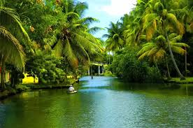
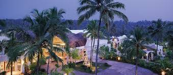

A state where verdant hills meet serene backwaters
Kerala's landscape is a mesmerizing blend of emerald hills, serene backwaters, and captivating coastline. From the majestic Western Ghats draped in lush greenery to the tranquil beaches with swaying palm trees, Kerala offers a nature lover's paradise. Explore the serene Kumarakom backwaters, the cascading beauty of Athirappilly Falls, and the vast expanse of Munnar's rolling hills.
Delve into the rich tapestry of Kerala's history and culture, influenced by ancient Dravidian traditions, Portuguese colonialism, and diverse religious communities. Witness the architectural marvels of Padmanabhaswamy Temple, wander through the historic streets of Fort Kochi, and experience the vibrant Theyyam performances.
Discover the unique charm of Kerala's cities and towns, each offering a distinct flavor. Explore the bustling markets and serene canals of Alleppey, the laid-back beaches and colonial architecture of Fort Kochi, and the hill station charm of Munnar.
Embark on an unforgettable adventure in munnar hils,amidst rolling tea plantations,misty mountains.